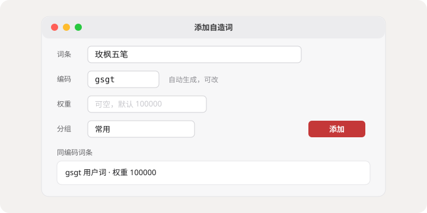
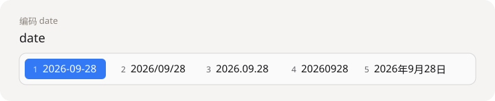
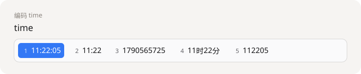

自造词
默认 Control + Option + N 打开造词窗口。选中的文字，或两分钟内刚上屏的词，会自动填入。编码按五笔规则生成，同编码的词会标出来自哪个词库。
macOS 原生输入法 · 1.0.2
86 极点码表。人名和项目名随手造进去，date time week 直接变成当前日期和时间。候选栏跟着系统明暗走，快捷键按五笔习惯来。
不改你原来的五笔手感，把造词、时间和候选外观放在手边。
默认 Control + Option + N 打开造词窗口。选中的文字，或两分钟内刚上屏的词，会自动填入。编码按五笔规则生成，同编码的词会标出来自哪个词库。
输入 date、time、week，候选就是当前日期、时间和星期。从「2026-09-28」到时间戳，用数字键选取。
空格上屏，数字 1–9 选词，单按 Shift 切换中英。翻页键和 ; ' 选二三候选可以在设置里改。
横排或竖排，明暗两套颜色，首位可以单独高亮。也可以只显示圆点，或完全藏起候选条盲打。皮肤能导出，换一台机器再导入。
用户词按分组管理。登录后和码表助手、iOS 共用账号，可以对比、合并或覆盖。没变化时只查修订号，不会把删掉的词拉回来。
标点由输入法处理，每一键的输出和上屏方式都能改。不会拆的字，用 z 加拼音反查。
造词窗口不抢当前软件的前台。日期候选来自当时的系统时间。



这是系统输入法。装进「应用程序」之后，还要在系统设置里启用一次。
macOS 安装包放在这个仓库里。Windows 版会用单独的下载页。
macOS
通用二进制。打开后拖到「应用程序」。若系统提示来自未识别的开发者，到系统设置里允许打开这一次。
SHA256 ae229d47c37f1f199e65e25f832c59623baabc775132386fa7014b93543cb8e2
Windows
Windows 版会单独发布，不占用这个 macOS 下载页。功能对齐之后再给出安装包地址。